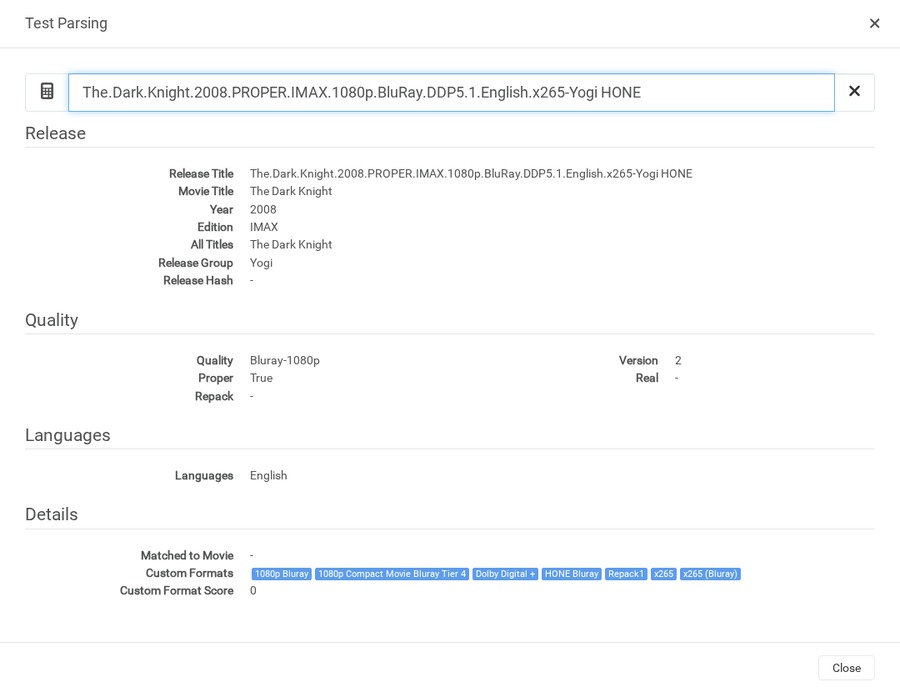
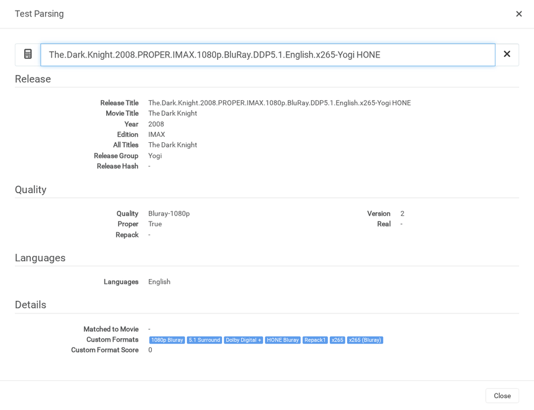

Twenty-six fixes on
jakes-profilarr-database @ fix/regex-audit
versus upstream Dictionarry-Hub/database @ v2 (op 210).
Every change is evidence-backed and gated so nothing else moves; cards identify synthetic controls where no current real-world victim was found. The corner badge on each card says whether the bug also exists in the v1 database (your live profilarr) or only in v2.
36migrations (fork ops 10211–10246)
39regex updates + 19 format-graph/score changes
683 / 683.NET labeled checks green
249 / 249Profilarr parser tests green
0new false positives (diff-gated)
Changelog · newest first
Sort
Impact is judged only by what a change does to a live grab decision —
whether a wrong ban was blocking good releases, whether a bad release could win, how much score moves and
across how many profiles. Whether the same bug also exists in the v1 database is not part of it:
v1 is dead. Anything verified to change nothing in a real arr scores 0.
OP 10246
ALL4 + DSCP service tags
score 0 visibility rowsgap in v1 + v2
impact 20 · Changed 2026-08-07 13:09 UTC · op 10246 · part of #17
Channel 4 (ALL4) and Discovery+ (DSCP) WEB-DLs are live in the evidence
corpus (14 titles) but matched no service tag. Zero-score rows in every profile match
the existing niche-service convention (iP/NOW/CRAV). DSCP stays strict — TRaSH's
dcp/disc spelling variants collide with ordinary words. ITVX/MY5/STV/U-NEXT remain
deferred (zero evidence); the daily evidence feed now hunts for them.
taggedBangers.and.Cash.S14E03…1080p.ALL4.WEB-DL-RAWR · Battle.on.the.Beach.S03.1080p.DSCP.WEB-DL-FUZEER · evidence corpus
boundary…ALL4ONE… · longer tokens stay unmatched
OP 10245
10-bit AVC penalty
−10000 Compact/Efficientgap in v1 + v2
impact 72 · Changed 2026-08-07 13:07 UTC · op 10245 · closes #13
Hi10P (10-bit AVC) has no hardware decoder anywhere — it always forces a
software transcode — yet scored like ordinary x264. The AVC conjunction is mandatory:
the marker regex alone matches 78 evidence titles, most of them fine 10-bit HEVC, so
x264 is required and x265 required-negated; only true Hi10P encodes take the −10000
penalty in the hardware-oriented 1080p Compact/Efficient profiles.
bit depth was not expressible; Hi10P scored as ordinary x264
penalizedBig.Hero.6.2014…DTS.Hi10p.x264-NTb · The Hobbit…Hi10P x264-DON · real Hi10P encodes
HEVC safeThe_Shining_1980…x265_10bit_MarkII · x265 negation blocks the penalty
OP 10244
Criterion format
+50 radarr Quality/Remuxgap in v1 + v2
impact 40 · Changed 2026-08-07 13:05 UTC · op 10244 · closes #10
Boutique disc labels matched nothing unless the title happened to contain
“Edition” (112 Criterion titles in the evidence corpus). Disc editions only: bluray/dvd
source conditions exclude Criterion CHANNEL web releases (which stay the CRiT streaming
tag's business), and a parsed release group literally named Criterion is
required-negated. Masters of Cinema / Vinegar Syndrome deferred — zero evidence.
no boutique-label pattern; CRiT covers the Criterion CHANNEL streaming tag only
Criterion (?<![^\W_])Criterion(?![^\W_])
Criterion Group (?<=^|[\s.-])Criterion\b required-negated
sources bluray OR dvd (keeps Criterion Channel WEB out)
channel guardCriterion.Channel.Exclusive.2023.1080p.WEB-DL · excluded by source conditions (parser-level)
OP 10243
DS4K format
+25 in 1080p profilesgap in v1 + v2
impact 28 · Changed 2026-08-07 12:28 UTC · op 10243 · closes #12
DS4K (1080p downscaled from the 2160p master) is a widespread tracker
convention with no pattern anywhere in the database. Live evidence:
Crime.101.2026.1080p.DS4K.WEB-DL.x265…-Kris. Small +25 in 1080p
Quality/Efficient/Balanced — the token says the master was 4K, not that the encoder is
good, so it stays a tiebreak.
no DS4K pattern in the database
DS4K (?<![^\W_])DS4K(?![^\W_])
scoredCrime.101.2026.1080p.DS4K.WEB-DL.x265.10bit.HDR.E-AC-3.5.1-Kris · evidence corpus
impact 30 · Changed 2026-08-07 12:26 UTC · op 10242 · closes #9
LEDGER iteration 1 ruled Remastered out of Special Edition ("Radarr
classes them separately") but the sibling format was never created — the phenomenon
became inexpressible. 82 remaster titles live in the evidence corpus; 30 match the new
post-year-anchored pattern (the rest are space-separated originals covered by the same
boundary class). +25 in the four Quality/Remux profiles.
no pattern for remastered releases (ruled out of Special Edition, sibling never created)
title wordRemastering.The.Beatles.2023… · no year anchor before the token
OP 10241
Hybrid format
+100 Quality/Remux tiebreakgap in v1 + v2
impact 35 · Changed 2026-08-07 12:24 UTC · op 10241 · closes #8
Zero patterns contained “hybrid” despite hybrids being the flagship
output of this database's own top-tier groups — 110 hybrid titles (103 hybrid remuxes)
in the evidence corpus scored identically to their non-hybrid siblings. New
underscore-tolerant marker regex + a required-negated parsed-group condition so the
-HYBRID release group can never masquerade as the marker. +100 in the five
Quality/Remux profiles.
no pattern in the database contained "hybrid"
Hybrid (?<![^\W_])HYBRID(?:(?![^\W_])|\d)
HYBRID Group (?<=^|[\s.-])HYBRID\b required-negated release_group
group guardMovie.2023.2160p.WEB-DL.DV.HDR10.HEVC-HYBRID · parsed group HYBRID is required-negated (parser-level)
OP 10240
Ban magnitude raised above stackable positives
−999999 → −99999999 (421 rows)bug in v1 + v2
impact 100 · Changed 2026-08-07 12:20 UTC · op 10240 · closes #20
Fork-sweep finding, corroborated locally: −999999 is not safely above
every reachable positive stack. Computed per-profile upper bounds (max ladder CF + max
tier CF + all other positives) reach 1.07M in 1080p Quality and 11.15M in 2160p
Efficient — and op 10232 documented a real release stacking to 1,840,606
before its fix, which would have flipped any −999999 ban net-positive. Every ban row
moves two orders of magnitude down; two new graph invariants hold the line (naive bound
< |worst ban| per profile; no legacy-magnitude rows). The deliberate −820000
x265 (Bluray) counterweight is exempt by design.
worst realistic stack seen: 1,840,606 > 999,999
ban floor −99,999,999 · invariant: naive bound < |ban| per profile
OP 10239
5.1 / 7.1 Surround formats wired
+50/+100 Balanced tiebreakgap in v1 + v2
impact 42 · Changed 2026-08-07 11:11 UTC · op 10239 · closes #15
The 5.1 Surround regex existed since v1 “for people who want to
rank it” with zero consumers, and LEDGER iteration 19 proved its improved
separator/end-boundary form (+210 bundled titles, zero losses) but ruled it could only
ship atomically with wiring. This is that wiring: the pattern updates to the op-10226
7.1 form ((?<!\d)5[ ._]1(?!\d)), and both channel counts become formats
scoring +50/+100 in the two Balanced profiles only. The 5.1 format required-negates 7.1
so exactly one fires; bonuses sit far below the 1000-point tier gap.
now scoredShow_2026_S01_720p_WEB-DL_AAC_5_1 · underscore + end-of-title boundary (iteration-19 recovered class)
exclusiveMovie.2026…DDP5.1.and.Atmos.7.1-GRP · dual-marker titles resolve to 7.1 only
number guardMovie.2026.Part.15.1.Documentary · digits inside larger numbers stay unmatched
gate639/639 labeled checks · 6 intended flips in the 924-title matrix, zero lost matches
OP 10238
Open Matte standalone format
neutral highlight · score 0gap in v1 + v2
impact 18 · Changed 2026-08-07 11:09 UTC · op 10238 · closes #11
The audit-hardened Open Matte regex was wired only as a negation inside the
edition formats, so Open Matte itself could be neither preferred nor avoided. It becomes a
standalone format at score 0 radarr-side in every profile — visible in the arrs and ready
to flip positive or negative to taste.
regex Open Matte (?<![^\W_])(Open[ ._-]?Matte)(?![^\W_])
consumers negation-only, inside the edition formats
CF Open Matte required: Open Matte · score 0 radarr, every profile
Wiring and controls
highlightedThe.Abyss.1989.Open.Matte.1080p.WEB-DL · canonical release now carries the format
impact 15 · Changed 2026-08-07 11:07 UTC · op 10237 · closes #7
Usenet obfuscation and retag suffixes replace the real release group, so
group tiers cannot score those releases (11 live examples in the evidence corpus). Per
maintainer decision the new Obfuscated format is a note only: two new
regexes (per-group tags like -AsRequested/-CAPTCHA/-4P,
and bracketed retags like [rartv]/[TGx]) scored 0 in every
profile — visible, never blocking. An invariant now enforces the score stays 0 until
deliberately changed.
no pattern in the database matched usenet obfuscation or retag tags
no prefix theft…x264-4Planeteers · Captcha.Solving.Robots.2023 · longer group names and title words stay unmatched
OP 10236
EVO (No WEB) ban wired
−999999 radarr · WEB carve-outgap in v1 + v2
impact 90 · Changed 2026-08-07 11:05 UTC · op 10236 · closes #3
The EVO group regex existed since v1 with zero condition links. EVO's
non-WEB output is the classic fake-early-Bluray/retagged-cam class that beats the CAM ban
by using HDRip/BluRay naming; their genuine WEB-DLs are ordinary. The new format requires
parsed group EVO and negates WEB-DL/WEBRip sources plus the WEB-DL title token, then bans
−999999 radarr-side in the same 11 profiles as CAM. (TRaSH now bans EVO outright; the WEB
carve-out follows issue #3's decision.)
regex EVO exists · orphaned, nothing consumes it
group EVO ∧ ¬web_dl ∧ ¬webrip ∧ ¬WEB-DL-title → −999999 (radarr ×11)
Victims and controls
bannedThe.Beekeeper.2024.HDRip.x264-EVO · fake-source class
carve-outMonkey.Man.2024.1080p.AMZN.WEB-DL.DDP5.1.H.264-EVO · WEB-DL token blocks the graph
boundaryMovie.2024.1080p.BluRay.x264-EVOLVE · EVOLVE is not EVO
OP 10234
Atmosphere prefix collision in Atmos
false Atmos bonus · Missing suppressedbug in v1 + v2
impact 70 · Changed 2026-08-07 09:12 UTC · op 10234
Op 226 right-bounded its new Atmos branches against
Atmosphere-class collisions but kept the legacy unbounded \bATMOS
prefix branch, so word-boundary-delimited titles (Atmosphere.2023.,
start-of-title Atmosphere…) still classified as Atmos and wrongly
suppressed Atmos (Missing). The legacy branch is a strict subset of the
bounded (?<![^\W_])ATMOS(?:(?![^\W_])|\d) branch for every genuine
marker shape, so OP 10234 simply drops it. Underscore-delimited
_Atmosphere_ was already protected by \b failing between
word characters; this closes the remaining dot/start-delimited class.
FP clearedAtmosphere.2023.1080p.WEB-DL.H264 · movie titled Atmosphere no longer earns the Atmos bonus
Missing restoredAtmosphere.1997.Concert.1080p.BluRay.TrueHD.7.1-GRP · TrueHD 7.1 with no real marker now correctly reaches Atmos (Missing)
dotted markerMovie.2026.1080p.WEB-DL.DDP5.1.Atmos.H.264-GROUP · bounded branch keeps every genuine shape: dotted, _ATMOS_, joined TrueHDAtmos, TrueHD 7.1 Atoms
full sweep924-title flip matrix · exactly one intended flip; 601/601 labeled checks green
OP 10233
SBS broadcaster context in 3D
−999999 on Korean broadcaster releasesbug in v1 + v2
impact 0 · Changed 2026-08-07 09:10 UTC · op 10233
No real-world effect — not an upstream bug. Verified 2026-08-07 against real Radarr/Sonarr instances (see scripts/arr_verify.py). The 3D format is radarr-only and is never synced to Sonarr, and every evidenced SBS title is a TV series. No live grab was ever at risk from this class. The migration stays in place as defence-in-depth, but this card originally overstated its impact.
Op 223 excluded bare SBS only when immediately followed by
WEB-DL/WEBRip — the evidenced class at the time. The same Korean-broadcaster
collision exists for the network's other forms: bare SBS immediately
followed by HDTV, a resolution token (720p/1080i),
an E-numbered episode marker, or a six-digit broadcast date stamp is a
channel tag, not a Side-by-Side packing marker. OP 10233 extends both lookaheads
(yearless corroborated branch and post-year branch) to the full broadcaster-context
set. Genuine stereoscopic names keep matching: any explicit 3D token
still matches directly, and H/Half/F/Full-prefixed packing forms (HSBS, Half-SBS,
FSBS) never enter the bare-SBS exclusion.
Representative broadcaster cases and stereoscopic controls
ban clearedSnowdrop.2021.E01.SBS.1080p.HDTV.H264-KOREAN · broadcaster tag after year no longer −999999 as 3D
ban clearedRunning.Man.E653.2023.SBS.720p.HDTV.x264-NEXT · bare channel tag before resolution
disc contextMovie.2010.1080p.SBS.BluRay.x264-GRP · bare SBS followed by BluRay stays a packing marker
real 3DInception 3D … Half SBS · Free.Guy.3D_2021.Full-SBS · Bad.Words…_3D_SBS · all explicit and prefixed forms unchanged
full sweep924-title flip matrix · exactly two intended flips; zero collateral
OP 10235
CONSORTiUM / SilentRogue Remux tier links
missing +80/+60 remux preferencev2 only · new in v2
impact 65 · Changed 2026-08-07 01:08 UTC · op 10235
Ops 154 and 155 are explicitly named “Add CONSORTiUM to Remux Tier 2”
and “Add SilentRogue to Remux Tier 3”, but their exports contain only the regex
creation/correction steps — neither links its regex to the named custom format, so
both groups could never receive the intended remux-tier preference in the 1080p and
2160p Remux profiles. OP 10235 restores exactly the two omitted optional
release-group conditions, guarded as one all-or-none change so it only applies when
both complete pre-fix graphs, expected regex patterns, format descriptions, and
+80/+60 profile scores are all still in place. Scores, regex text, required Remux/DVD
gates, and existing tier members are unchanged.
regex CONSORTiUM / SilentRogue exist
Remux Tier 2/3 no condition links the groups
+80 restoredDune.Part.Two.2024.1080p.BluRay.REMUX.AVC.TrueHD.7.1.Atmos-CONSORTiUM · synthetic Radarr control · Tier 2 only
+80 restoredThe.Expanse.S01E01.1080p.BluRay.REMUX.AVC.DTS-HD.MA.5.1-CONSORTiUM · synthetic Sonarr control · Tier 2 only
+60 restoredBlade.Runner.2049.2017.2160p.UHD.BluRay.REMUX.HEVC.TrueHD.7.1.Atmos-SilentRogue · synthetic Radarr control · Tier 3 only
+60 restoredThe.Expanse.S01E01.1080p.BluRay.REMUX.AVC.DTS-HD.MA.5.1-SilentRogue · synthetic Sonarr control · Tier 3 only
evidence scopeNo exact current victim was found in bundled releases, saved Prowlarr metadata, Arr history, or the optional local media corpus · eight positive/cross-tier controls prove both app paths without claiming a real hit
live gate30 tested formats / 249 tests · 249 pass, zero fail, zero unknown in synced Profilarr database 2
OP 10232
Compact Yogi/HONE tier disjointness
stacked +940,000 tier scorebug in v1 + v2
impact 88 · Changed 2026-08-07 00:20 UTC · op 10232
The QxR release-group expression includes
YOGI, while the HONE fallback intentionally recognizes a HONE marker in
the title when the parsed group is not HONE. A real x265-Yogi HONE
release therefore received both 1080p Compact Movie Bluray Tier 4
(+940,000) and HONE Bluray (+900,000). Op 98 is explicitly named
“Prevent Yogi Double Matching” and already added required Not HONE
guards to the analogous Efficient tiers, but omitted Compact. OP 10232 adds the same
required-negated HONE title guard only to Compact’s two Radarr movie tiers that
share a live HONE fallback (Bluray and WEB). No regex, score, TV tier, or Sonarr
behavior changes.
Compact tier QxR/YOGI + x265 + source
HONE fallback title:HONE + parsed group != HONE
Result both positive tiers stack
Compact tier QxR/YOGI + x265 + source + NOT title:HONE
HONE fallback unchanged
Result exactly one intended tier
Same release in a live Radarr · Test Parsing
Before · upstream Dictionarry v2

After · this fork, op 10232

1,840,606 → 900,606 in 1080p Compact. Upstream fires
1080p Compact Movie Bluray Tier 4 (+940,000) andHONE Bluray (+900,000)
on one release; the fork fires exactly one. Captured on two disposable Radarr instances synced from the
same Profilarr — upstream v2 on :7892, this fork on :7891. The modal's own "Custom Format Score: 0" is
Radarr's unmatched-movie display and is not profile-aware; the profile totals above come from the API.
The English token keeps the unrelated language ban out of the comparison.
WEB proofMovie.2026.1080p.WEB-DL.H265.DDP5.1-Yogi HONE · 1,803,600 → 920,600; HONE WEB remains the sole tier
full sweep1,734 bundled releases · exactly one intended delta; post-fix maximum 993,080; zero −999999 ban escapes
OP 10231
Compact Extras hard ban
escaped Compact’s −999999 banbug in v1 + v2
impact 82 · Changed 2026-08-06 23:36 UTC · op 10231
Every shipped profile except 1080p Compact hard-banned
Extras in both apps. Compact’s direct v1 ancestor originally carried the same Radarr
Extras and Sonarr TV Extras scores, but commit
c156dfad removed both during an unrelated source/tier rewrite explicitly
marked “DO NOT USE COMPACT PROFILE TESTING ONLY.” No policy rationale accompanied the
deletion, the other special-content bans stayed, and the initial v2 translation
inherited the omission. OP 10231 restores only Compact’s two missing −999999 rows after
verifying the repaired two-branch Extras graph and the exact 10-profile peer matrix.
The resulting 11-profile × 2-app policy is enforced by a database-level regression
check.
Bundled releases this rejects — and paired controls it preserves
now rejectedAvengers Endgame Digital Extras · movie · Compact 863,660 → −136,339; minimum 200,000
main featureAvengers Endgame · paired movie control remains 863,660
now rejectedThe Last of Us S01 Extras 1080p HMAX WEB-DL · series · 862,510 → −137,489
main seasonThe Last of Us S01 1080p HMAX WEB-DL · paired series control remains 863,110
title controlExtras.S02E01.1080p.HMAX.WEB-DL.DD2.0.H.264-PeDRO · show title, not an extras pack; remains unmatched
OP 10230
Remux detector union
escaped a −999999 Remux banv2 only · v1 kept separate detectors
impact 85 · Changed 2026-08-06 23:10 UTC · op 10230
V2 ops 9–11 collapsed the title, Radarr quality-modifier, and
Sonarr bluray_raw Remux detectors into one custom format. Arr ANDs
different condition implementation types, so Radarr effectively required both a
Remux title token and a parsed Remux modifier; title-only and parser-only releases
both escaped the hard ban. Sonarr ignored the optional raw-source sibling beside its
required source condition. OP 10230 restores the two app-native fallback formats,
negates the shared title on each fallback so the branches cannot double-score, and
applies Not DVD to every branch. The same −999999 policy now covers the
intended union in the same nine profiles while DVD Remux eligibility is preserved.
Radarr title AND Not DVD AND modifier:remux
Sonarr title AND Not DVD (bluray_raw fallback ignored)
Base title AND Not DVD
Radarr OR modifier:remux AND NOT title AND Not DVD
Sonarr OR source:bluray_raw AND NOT title AND Not DVD
Releases this fixes — and controls it preserves
escaped the banAVATAR 2009 4K REMASTER REMUX [RoB] · bundled TorrentLeech · native Radarr modifier None · title arm restored
escaped the banThe Dark Knight (2008) UHD MKVRemux 2160p DTS-HD NL · bundled TorrentLeech · native Radarr Remux-2160p · parser arm restored
escaped the banA.White.Spot.in.the.Back.of.the.Head.1979.720p.BluRay.Remux.DD.2.0-PTP · real Prowlarr · native Radarr 720p modifier None
escaped the banRicky.Bobby.Koenig.Der.Rennfahrer.2006.THEATRICAL.GERMAN.DL.1080P.BLURAY.AVC-UNDERTAKERS · real Prowlarr · native Radarr parser-only Remux
one scoreInterstellar.2014.1080p.BDRemux.AVC.DTS-HD.MA.5.1-HDCLUB · title + parser classifier · remains exactly one −999999
DVD controlScary.Godmother.Halloween.Spooktakular.2003.720p.DVD.Remux.MPEG2.DD.2.0 · remains outside the Remux ban
OP 10229
EA release-group tier overlap
stacked +283,000 tier scorebug in v1 + v2
impact 78 · Changed 2026-08-06 22:35 UTC · op 10229
EA remained in 720p Quality Tier 4 after the
authoritative v1 commit a0a23ed explicitly moved it to
720p Quality Tier 5. Because both tiers have the same effective 720p,
non-remux, and source gates, real EA releases matched both formats in Radarr and Sonarr.
Both are scored in all 11 profiles: +142,000 from Tier 4 stacked with +141,000 from
Tier 5 for an unintended +283,000. The migration removes only the stale Tier 4 EA
condition; Tier 5, every other group member, and all profile score rows remain intact.
720p Quality Tier 4 · EA + 720p Quality Tier 5 · EA
720p Quality Tier 5 · EA
Releases this fixes — and control it preserves
score fixedLegiony.2019.720p.BluRay.DD5.1.x264-EA · real Prowlarr movie · now only Tier 5 +141,000
score fixedMy.Hero.Academia.S03E24.720p.BluRay.AAC.2.0.x264-EA · real Prowlarr episode · now only Tier 5 +141,000
control1883.S01.720p.BluRay.DD5.1.x264-NTb · bundled real title · remains only Tier 4 +142,000
OP 10228
720p HDTV Tier 3 resolution
missed +20,000 / stacked +60,000bug in v1 + v2
impact 75 · Changed 2026-08-06 22:19 UTC · op 10228
720p HDTV Tier 3 carried a required 1080p
resolution condition, making its complete condition graph identical to
1080p HDTV Tier 3. Both formats are live in all 11 profiles for Radarr and
Sonarr. A qualifying 1080p HANDJOB HDTV release could therefore stack the +40,000 and
+20,000 tiers, while a real 720p release missed its +20,000 tier entirely. The migration
corrects both the condition name and its backing resolution value without changing any
profile scores or other format.
720p HDTV Tier 3 · required resolution = 1080p
720p HDTV Tier 3 · required resolution = 720p
Release this fixes — and controls it preserves
score fixedESPN.E60.WWE.Behind.The.Curtain.720p.HDTV.x264-HANDJOB · real Prowlarr result · now receives only the 720p Tier 3 +20,000
controlESPN.E60.WWE.Behind.The.Curtain.1080p.HDTV.x264-HANDJOB · constructed resolution twin · receives only the 1080p Tier 3 +40,000
OP 10227
DTS / Hi10P video profiles
missed +300 DTS scorebug in v1 + v2
impact 50 · Changed 2026-08-06 18:21 UTC · op 10227
The shared DTS-HD HRA/ES negator ended its legacy Hi
shorthand without a boundary. Real releases that put the Hi10P or Hi444PP H.264 video
profile after ordinary DTS therefore looked like higher-tier DTS audio and lost the +300
DTS score in 11 profiles. The new separator-aware end guard rejects a following letter or
digit while preserving underscore separators and the existing DTS-ES, HR, and HRA forms.
Across the fresh 251-title Prowlarr union, exactly eight real titles regain DTS; the full
1,734-row bundled sweep changes only the HDBits Avatar release.
controlResident.Evil.Apocalypse.2004.EXTENDED.EDITION.1080p.Blu-ray.DTS-HD.HRA.X264-ViSTA · Prowlarr · HRA remains intact
OP 10226
Atmos / 7.1 Surround
missed +400 + wrong Atmos bucketbug in v1 + v2
impact 68 · Changed 2026-08-06 17:59 UTC · op 10226
The 7.1 regex required a literal dot and consumed one character on each side,
missing real space- and underscore-normalized channel markers plus a bundled end-of-title
marker. Its only consumer drives the +400 Atmos (Missing) score in four profiles. Expanding
that regex alone was unsafe: real _Atmos_, TrueHDAtmos, BTN, and
contextual Atoms spellings would land in the wrong bucket. The three-pattern
graph fix adds two genuine Missing matches and moves 18 false Missing matches to Atmos in
the fresh 1,166-title query union, with no raw-regex match losses.
controlThe.Last.Of.Us.S01.1080p.BluRay.TrueHDA7.1.H.264-WiKi · bundled BTN metadata · remains Atmos, never Missing
OP 10225
Special / Extended Edition
missed +1000 edition scoresbug in v1 + v2
impact 60 · Changed 2026-08-06 17:23 UTC · op 10225
Word boundaries treat underscores as word characters, so real underscore-heavy
names missed the scored Special and Extended Edition positives. Both formats score +1000 in
11 Radarr profiles and share five required negations. Widening only the positives was unsafe:
seven negation matches still failed and nine corpus checks became false-positive formats.
The two positives and all five guards therefore move to separator-aware boundaries together.
Special (?<=\b[12]\d{3}\b).*\b(Cut|Directors|DC|Extended|Redux|Special|Uncensored|Uncut|Unrated|Version|(?<!{)Edition)(\b|\d)
Extended (?<=\b[12]\d{3}\b).*\b(Extended)(\b|\d)
Guards \b-anchored IMAX · Open Matte · Theatrical · Extended Clip · Sing Along
Special (?<![^\W_])[12]\d{3}(?![^\W_]).*(?<![^\W_])(?:Cut|Directors|DC|Extended|Redux|Special|Uncensored|Uncut|Unrated|Version|(?<!{)Edition)(?:(?![^\W_])|\d)
Extended (?<![^\W_])[12]\d{3}(?![^\W_]).*(?<![^\W_])(Extended)(?:(?![^\W_])|\d)
Guards separator-aware IMAX · Open Matte · Theatrical · Extended Clip · Sing Along
Releases this fixes — and controls it preserves
score fixedAvatar_2009_Collectors_Edition_With_Bonus · bundled PassThePopcorn metadata · Special +1000
score fixedThe_Shining_1980_Directors_Cut_1080p_BDRip_AAC_5_1_x265_10bit_MarkII · Prowlarr · Special +1000
score fixedA.Grand.Ole.Opry.Christmas.2025._edition-Extended_.1080p.WEBRip.DDP.2.0.10bit.H.265-iVy · Prowlarr · Extended +1000; also Special by existing design
controlAvatar.2009._edition-Theatrical_.1080p.BluRay.DDP.5.1.10bit.H.265-iVy · Prowlarr · remains excluded from Special
controlAliens.1986.Special.Edition.Open.Matte.1080p.x265.DTS-HD.MA.5.1.Kira.SEV · Prowlarr · remains excluded from Special
OP 10224
Extras / Bonus markers
escaped a live hard banbug in v1 + v2
impact 80 · Changed 2026-08-06 16:53 UTC · op 10224
The movie and TV Extras regexes used word boundaries around their year,
season, and extras markers. Because underscore is a word character, real underscore-heavy
names matched none of those boundaries and escaped the −999999 Extras score in 10 Radarr
and 10 Sonarr profiles. Separator-aware lookarounds now admit underscores while preserving
the post-year and post-season gates that protect movie and show titles.
Movie (?<=\b[12]\d{3}\b).*(\b|\.)\b(Extras?|Bonus|Extended[ ._-]Clip|Special Feature[s]?)\b
TV (?<=\bS\d+\b).*\b(Extras|Bonus|Extended[ ._-]Clip)\b
Movie (?<![^\W_])[12]\d{3}(?![^\W_]).*(?<![^\W_])(?:Extras?|Bonus|Extended[ ._-]Clip|Special Feature[s]?)(?![^\W_])
TV (?<![^\W_])S\d+(?![^\W_]).*(?<![^\W_])(?:Extras|Bonus|Extended[ ._-]Clip)(?![^\W_])
controlExtras.S02E01.1080p.HMAX.WEB-DL.DD2.0.H.264-PeDRO · show title stays outside the ban
controlThe.Extra.Man.2010.1080p.BluRay.x264-GROUP · movie title stays outside the ban
OP 10223
3D / SBS packing
wrong hard bans + missed 3Dbug in v1 + v2
impact 25 · Changed 2026-08-06 16:34 UTC · op 10223
Bare SBS is both a stereoscopic packing tag and a Korean
broadcaster tag. Three real SBS.WEB-DL releases therefore took the 3D
format’s −999999 score in all 11 Radarr profiles. In the other direction, the global
year gate and word boundaries missed real underscore-delimited and yearless 3D names.
Bare SBS immediately before WEB-DL/WEBRip is now excluded; underscore separators are
accepted; and a yearless path requires both an explicit 3D tag and a packing marker.
was 3D-bannedCry.Wolf.2024.S01E06.720p.SBS.WEB-DL.AAC.2.0.H.264-4f8c4100292 · Prowlarr
was 3D-bannedThe.Ballad.Of.Us.2025.S01.1080p.SBS.WEB-DL.AAC.H.264-RSG · Prowlarr
was 3D-bannedNight.Bloomers.2023.S01.720p.SBS.WEB-DL.AAC.2.0.H.264-MUNFAQQIHA · Prowlarr
was missedBad.Words.2013.BluRay.1080p-DTS_3D_SBS · Prowlarr
was missedInception 3D BluRay 1080p Half SBS DTS-TehDiNGO · bundled TorrentLeech metadata
was missedFree.Guy.3D_2021.Full-SBS.x-JFC_4k_hevc · Prowlarr
controlJaws.3D.1983.1080p.HMAX.WEB.DL.DD2.0.x264.DUAL.Yatogam1 · title-only 3D stays unmatched
controlThe.Dark.Knight.2008...-TEKNO3D · group suffix stays unmatched
OP 10222
Repack1 / 2 / 3
missed repack scorebug in v1 + v2
impact 48 · Changed 2026-08-07 04:45 UTC · op 10222
Underscore-separated names defeat word boundaries (the same class as the CAM
fix in OP 216), so underscore repacks missed the repack scoring across all three
revision tiers. Boundaries now accept underscores; "Properly" and dotted forms verified
unchanged.
\b(re(pack|rip)|proper)\b
(\b|_)(re(pack|rip)|proper)(\b|_)
Releases this fixes
was unscored28_Years_Later_2025_1080p_HDCAM_REPACK_x264-SyncUP · Prowlarr
controlMovie.2019.Properly.Broken.1080p.WEB-DL-GRP · no false positive
OP 10221
Apple TV+
missed service tagbug in v1 + v2
impact 45 · Changed 2026-08-07 04:20 UTC · op 10221
The spelled-out form was a literal with a space (and the group's trailing
anchor could not even close after "+."), so real dotted naming like
Apple.TV+.WEB-DL and plus-less Apple.TV.WEB-DL never matched.
The spelled form now takes a separator class and requires a following WEB token — same
guard style as Max/iTunes/Movies Anywhere, and the same fix class as Paramount+ (OP 10215).
was untaggedDrops.of.God.S01E01.A.Father.2160p.Apple.TV+.WEB-DL.DDP.5.1.Atmos.DV.H.265-BlackTV · Prowlarr
was untaggedDrops.Of.God.S01E02.Sky.Earth.Humans.2160p.Apple.TV.WEB-DL.DDP.5.1.Atmos.DV.H.265-BlackTV · Prowlarr
controlApple.TV.Repair.Man.2020.1080p.BluRay.x264-GRP · no false positive
OP 10220
Dolby Digital
missed audio scorebug in v1 + v2
impact 52 · Changed 2026-08-06 20:55 UTC · op 10220
Plain spelled-out Dolby.Digital.5.1 matched neither DD nor DD+ —
only the abbreviation was known, even though the Dolby Vision regex has always accepted
its spelled-out form. The new branch is Plus-guarded so spelled-out Dolby Digital Plus
stays with the DD+ regex from OP 214.
was unscoredCriminal.Minds.S01E03.720p.WEB-DL.Dolby.Digital.5.1.h264-Obfuscated · Prowlarr
was unscoredJawan.2023.1080p.NF.WEB-DL.Dolby.Digital.5.1.H.264-Telly
controlAgent.Elvis.S01E01...Dolby.Digital.Plus.with.Dolby.Atmos...-iVy · stays DD+ only
OP 10219
Full Disc
was banning ordinary DVDRipsbug in v1 + v2
impact 95 · Changed 2026-08-06 20:15 UTC · op 10219
The regex's trailing alternative sat outside its own rip-exclusion guard and
used unanchored tokens, so ordinary PAL/NTSC DVDRips — whose DVD source the format's
conditions don't exclude — took the −999999 full-disc ban, and PAL matched inside words
like "Palm". The tail now carries its own rip/remux guard and word-bounded tokens.
Codecs stay out of the guard on purpose: UHD discs are HEVC, and DVD9-sourced re-encodes
are already rescued by the format's Not-x265 condition.
was bannedMovie.2005.PAL.DVDRip.XviD-GROUP · Radarr fixture class
was bannedPalm.Springs.2020.1080p.WEB-DL.DD5.1.AV1-GROUP · PAL inside "Palm"
control1945.2017.COMPLETE.BLURAY-CiNEMATiC · real disc, still matches
control1991.The.Year.Punk.Broke.2011.NTSC.DVD9.MDVDR-OMA · real DVD9 disc, still matches
OP 10218
Extras (format wiring)
live ban never firedv2 only · v1 wiring was fine
impact 0 · Changed 2026-08-06 19:20 UTC · op 10218
No real-world effect — not an upstream bug. Verified 2026-08-07 against real Radarr/Sonarr instances (see scripts/arr_verify.py). Same as OP 10217: the sync layer splits the conditions per app, so upstream's Extras ban was never actually unmatchable in a live arr. Verified against a clean Dictionarry v2 Radarr. The migration stays in place as defence-in-depth, but this card originally overstated its impact.
Same wiring bug as DUBBED, but live: Extras bans bonus-content releases at
−999999 in 20 profile entries, yet required its movie condition (year anchor) AND its
series condition (S## anchor) at once. Movie extras carry no season marker and TV extras
packs usually no year — both classes sailed past the ban. Conditions are now either-or.
Movie Extras required · TV Extras required (AND — needs year + S## together)
Movie Extras optional · TV Extras optional (OR — either form fires)
Releases this fixes
escaped the banAmerican.Reunion.2012.EXTRAS.1080p.BluRay.H264-RMXTRAS · Prowlarr
escaped the banBoardwalk.Empire.S01.EXTRAS.1080p.AV1.10bit-MeGusta · Prowlarr
controlThe.Extra.Man.2010.1080p.BluRay.x264-GROUP · title word, still unmatched
OP 10217
DUBBED (format wiring)
format could never matchv2 only · format absent in v1
impact 0 · Changed 2026-08-06 18:40 UTC · op 10217
No real-world effect — not an upstream bug. Verified 2026-08-07 against real Radarr/Sonarr instances (see scripts/arr_verify.py). Profilarr filters conditions by arr_type when it syncs, so Radarr only ever receives the movie condition and Sonarr only the TV one. The both-required deadlock cannot occur in the real pipeline — upstream matches these titles too. The migration stays in place as defence-in-depth, but this card originally overstated its impact.
Not a regex bug: the format required its movie condition (year-anchored)
AND its series condition (SxxExx-anchored) at the same time — impossible for any real
title. Both are now optional, which Radarr treats as either-or. The format is not yet
scored in any profile, so this changes no current scoring; it makes the format usable.
Movie DUBBED required · TV DUBBED required (AND — unsatisfiable)
Movie DUBBED optional · TV DUBBED optional (OR — either form fires)
Releases this fixes
never matchedArac.Attack.Angriff.der.achtbeinigen.Monster.2002.GERMAN.DUBBED.DL.1080P.BLURAY.X264-WATCHABLE · Prowlarr
never matched2.Broke.Girls.S01E22.And.The.Big.Buttercream.Breakthrough.GERMAN.DL.DUBBED.1080p.BluRay.x264-TVP · Prowlarr
impact 92 · Changed 2026-08-06 18:05 UTC · op 10216
Underscore-separated names defeat regex word boundaries (underscore is a
word character), so neither the year anchor nor the CAM token could fire — real cams
slipped past a −999999 ban. Verified against Radarr source: custom formats match the
raw title, underscores intact. Boundaries now accept underscores as separators.
escaped the ban28_Years_Later_2025_1080p_HDCAM_REPACK_x264-SyncUP · Prowlarr
control28.Years.Later.2025.1080p.HDCAM.V1.x264-SyncUP · dotted, still banned
controlThe.Notebook.2004.1080p.BluRay.x264-CAMELOT · no false positive
OP 10215
Paramount+
missed service tagbug in v1 + v2
impact 45 · Changed 2026-08-06 17:20 UTC · op 10215
“Paramount Plus” was matched with a literal space only, while dotted scene
names write Paramount.Plus. Sibling service regexes (Disney+, HBO Max, Crave)
already use separator classes; this brings Paramount+ in line.
\b(PMTP|Paramount Plus)\b
\b(PMTP|Paramount[ ._-]?Plus)\b
Releases this fixes
was untaggedInfinite.2021.2160p.WEB-DL.Paramount.Plus.Dolby.Vision.HEVC.E-AC-3.5.1-MZABI · hdencode
controlParamount.Pictures.90th.Anniversary.Collection.1080p.BluRay.x264-GROUP · no false positive
OP 10214
Dolby Digital +
missed audio scorebug in v1 + v2
impact 55 · Changed 2026-08-06 16:45 UTC · op 10214
Canonical E-AC-3 (Dolby’s own spelling) and spelled-out
Dolby.Digital.Plus matched neither DD nor DD+ — those releases got no audio
format at all, and the DD+ negations inside AAC/DTS/FLAC/TrueHD failed open.
was unscoredHamilton.2020.2160p.WEB-DL.DSNP.Dolby.Vision.HEVC.E-AC-3.5.1-LEWIS · hdencode
was unscoredThe.Browns.S01.1080p.WEB-DL.E-AC-3.H.264-BTN · hdencode
was unscoredGatillero.2025.1080p.WEB-DL.x264.E-AC-3-5.1.TTR · hdencode
was unscoredAgent.Elvis.S01E01.Full.Tilt.1080p.NF.WEBRip.Dolby.Digital.Plus.with.Dolby.Atmos.5.1.H.265.-iVy · Prowlarr
was unscoredBlack.Widow.2021.Web-Dl.1080p.HEVC.10bit.HDR.Dolby.Digital.Plus.with.Dolby.Atmos.6ch-CAPTCHA · Prowlarr
controlMovie.2021.1080p.WEB-DL.Dolby.Atmos.7.1.H.264-GRP · Atmos alone, still unmatched
OP 10213
Special Edition
missed +1000 edition scorebug in v1 + v2
impact 58 · Changed 2026-08-06 15:55 UTC · op 10213
The post-year token list had no Redux, so Redux cuts neither earned
the edition score nor tripped the “Not Special Edition” gate in the Theatrical formats.
No release group named REDUX exists, so the token adds no false-positive surface.
impact 0 · Changed 2026-08-06 14:55 UTC · op 10212
No real-world effect — not an upstream bug. Verified 2026-08-07 against real Radarr/Sonarr instances (see scripts/arr_verify.py). Upstream already fixed this class in their own op 209 (their issue #183), which is part of the v2 base this fork builds on. Fork and upstream classify GERMAN.WEB.DL, GERMAN WEB DL and genuine GERMAN.DL identically, so no grab decision changes. The migration stays in place as defence-in-depth, but this card originally overstated its impact.
The guard that stops the DL of WEB-DL reading as “Dual Language”
only covered the hyphen spelling. Dotted or spaced WEB-DL made English releases of
“German”-titled films look dual-language — a −999999 ban in 11 profiles.
(?=.*\bGERMAN\b)(?=.*\b(?<!WEB-)[DM]L\b).*
(?=.*\bGERMAN\b)(?=.*\b(?<!WEB[-_. ])[DM]L\b).*
Releases this fixes
was bannedThe.German.Doctor.2013.1080p.WEB.DL.DD5.1.H264-GROUP
was bannedA German Life 2016 720p WEB DL x264-GROUP
controlDer.Untergang.2004.German.DL.1080p.BluRay.x264-GROUP · real dual-language, still matches
OP 10212
Remux
fed a wrongful Full Disc banv2 only · regression (v1 matched BDRemux)
impact 0 · Changed 2026-08-06 14:55 UTC · op 10212
No real-world effect — not an upstream bug. Verified 2026-08-07 against real Radarr/Sonarr instances (see scripts/arr_verify.py). Radarr detects BDRemux through its own quality modifier before custom formats run, so the Remux format already matched these releases upstream. The regex is tighter, but no grab decision changes. The migration stays in place as defence-in-depth, but this card originally overstated its impact.
\b(Remux)\b never matched the joined spellings used by Russian and
Spanish trackers. This regex is the “Not Remux” gate in 49 formats — worst case, a
BDRemux with an AVC tag fired the Full Disc format’s −999999 ban in every profile,
and joined-spelling remuxes escaped the Remux and Banned Remux formats entirely.
\b(Remux)\b
\b((BD|UHD)[-_. ]?)?Remux\b
Releases this fixes
was full-disc-bannedInterstellar.2014.1080p.BDRemux.AVC.DTS-HD.MA.5.1-HDCLUB
was not a remuxVengadores.Endgame.2019.2160p.UHDremux.HEVC.DTS-HD.MA.7.1-GRUPO
controlMovie.2020.1080p.WEB-DL.x264-LazyRemux · group name, still unmatched
OP 10211
Dolby Vision (Without Fallback)
was banning legit releasesbug in v1 + v2
impact 0 · Changed 2026-08-06 13:25 UTC · op 10211
No real-world effect — not an upstream bug. Verified 2026-08-07 against real Radarr/Sonarr instances (see scripts/arr_verify.py). Radarr rewrites Blu-ray to Bluray before custom formats are evaluated, so upstream's exclusion already caught these releases. Fork and upstream classify every hyphenated Blu-ray DV title identically (verified 2026-08-07). The upstream bug report raised from this card was retracted. The migration stays in place as defence-in-depth, but this card originally overstated its impact.
The negation list only knew the spelling BLURAY, so hyphenated
Blu-ray disc releases — which always carry an HDR10 base layer — were treated as
fallback-less DV and hard-banned in 7 profiles. Same fix the project itself made for
its UHD Blu-ray regex in PR #31.